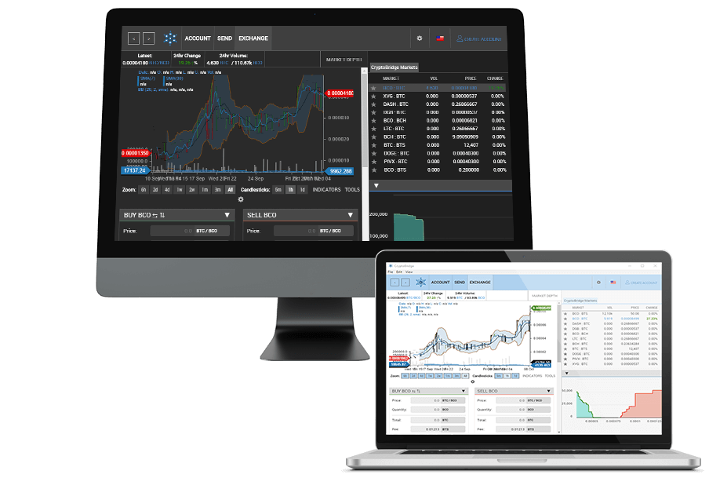

CryptoBridge DEX
CryptoBridge is a decentralized exchange (DEX) that supports trading of most popular altcoins. The main innovation is elimination of a single point of failure when trading cryptocurrencies.
In addition, another unique selling point is the usage of a multi-signature federated gateway software used by a dozen trusted gateways, operating on multiple continents, enabling trust-reduced issuing and withdrawing of the supported coins.

Decentralized technology
CryptoBridge's target audience are altcoin traders trading on centralized cryptocurrency exchanges which are riddled with performance problems and can be subject to thefts, manipulation, hacking incidents or government takedowns.
These problems are solved by the decentralized blockchain based order book and the multi-signature federated gateway network.
There is no central point of failure. All deposits, withdrawals and all order books are transparently stored on the blockchain.
The client will still be able to deposit, withdraw and trade coins even in the event CryptoBridge goes out of business. Each client holds the private keys to their coins. CryptoBridge has no access to the client's funds on the exchange.
The blockchain behind the decentralized exchange, graphene, can process up to 100.000 transactions per second and has an average confirmation time of just 3 seconds. The DEX offers a complete API for any interested party to build applications on top of the decentralized exchange.
CryptoBridge 0.12.6 *UI-refresh* release May 2018
Changelog
After a series of previews, betas and web wallet updates, we're proud to release an update for the app client as well. Be sure to follow us for the upcoming big news in May and June on our Discord as well as Twitter.
What about Market Makers?
We're extending the market maker program, and will continue to reward market makers (reimbursing their order fee) for the time being. As this would cut into 50% profit share for the stakers, CryptoBridge organisation will dedicate all of its profit share to the stakers, meaning full profit is to be distributed to CryptoBridge users (25% to market makers and 75% to BCO staking)!
CryptoBridge Market Maker program 2017-10-25
We are proud to announce the Market Maker program which allows all participants to earn money by providing liquidity to a trading market.
What is a market maker?
A market maker is someone who provides liquidity to a market. You can do that by creating sell or buy orders (limit orders), thus reducing the spread. This is good for markets: it gives other potential participants visible options and information. Thick order books also reduce slippage (ie. a large order doesn't spike the price as much, one way or the other). Thus adding liquidity to a market adds value to all existing and potential participants.
How does it work?
Once a limit order you placed gets filled, you're not only getting reimbursed for the trading fee, you actually receive 50% of the market taker's trading fee. At 0.20% fee per trading pair, you are actually earning 0.05% per filled order. Our goal is to improve liquidity and spread on all our markets. Payouts are happening on a weekly basis.
CryptoBridge is a decentralized exchange running on top of the BitShares Network. It supports decentralized trading on all popular altcoin pairs without a single point of failure. You always hold the private keys to your funds, only you have access to them.
BridgeCoin is a scrypt mineable coin similar to Litecoin. It was created in July 2017 to fund the development of the full CryptoBridge decentralized exchange. After funding is successful and the platform comes out of beta, 50% of all CryptoBridge DEX profits will be distributed to participating BridgeCoin owners.
CryptoBridge runs on top of the BitShares Blockchain which is decentralized by itself. In addition, our distributed federated gateway network enables trust-reduced depositing and withdrawal of all coins.
The wallet just hosts the application that you download, it stores no information at all from the user. All the connections to the blockchain happen client side. You can also download a Windows or Mac OS X client.
A gateway is a service that you can use deposit/withdraw coins and that converts coins to proxy-assets (UIA). Each issued proxy-asset is backed 1:1 with the real coins by the gateway.
CryptoBridge is using a federated network of many gateways connected to each other, all issuing the same multi-signature proxy-assets. A super majority of agreeing gateways is needed to publish a transaction on the blockchain. In this trust-reduced setup, you don't have to trust a single entity to hold your funds. Each gateway node is independently verifying the transactions of the other nodes to make sure gateways stay honest.
CryptoBridge is not a fork of BitShares/Graphene, it runs on top of the BitShares blockchain, much like other BTS Exchanges do. However, there are two main differences to any other BitShares Exchange:
CryptoBridge provides more decentralisation when it comes to the gateways, normally a BTS Gateway is a central point of failure because the Gateway is just operated by the company owning the exchange. The user is dependant on the gateway to deposit/withdraw his funds. In CryptoBridge, a federated distributed network of gateways, operating world-wide, makes sure that there is no single point of failure whatsoever. In fact, this network will continue to operate if CryptoBridge (the development company) goes out of business.
The second USP is the introduction of the BridgeCoin Profit Staking coin which shares 50% of the DEX with holders. No other BitShares exchange offers a mineable token.
Every week, the total profit of the DEX will be calculated, and distributed evenly to holders who have staked their BCO on the decentralized exchange. Staked BCO are removed from circulation for a specific time period yet to be determined.
Development of the basic platform needs to be finished first, to be expected to happen in Q4/2017. Afterwards, you can stake your coins in the client.
The market fees are set to 0.2% per trade pair.
It is actually both! It's safe to keep funds in the wallet assuming you have a strong password. Always download a backup of your wallet to a safe place.